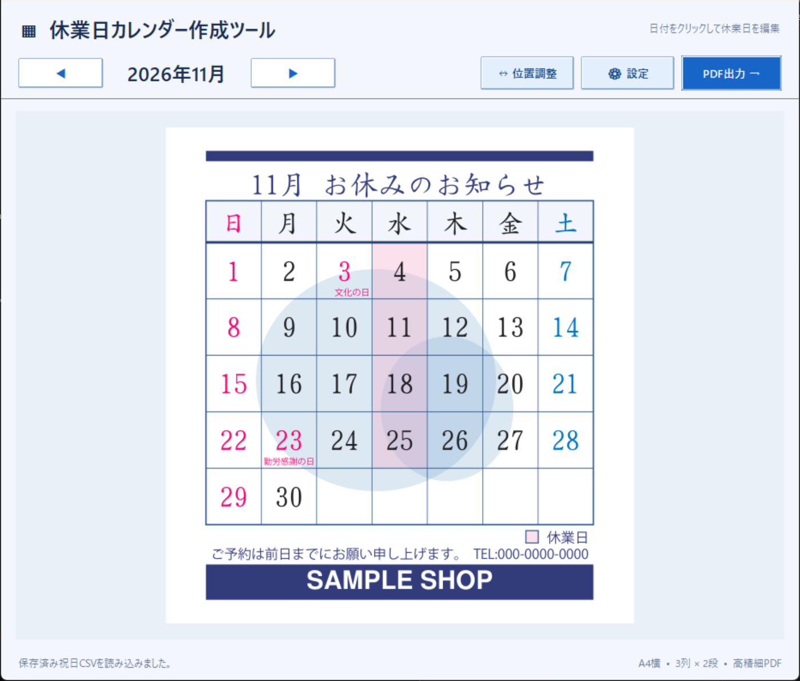
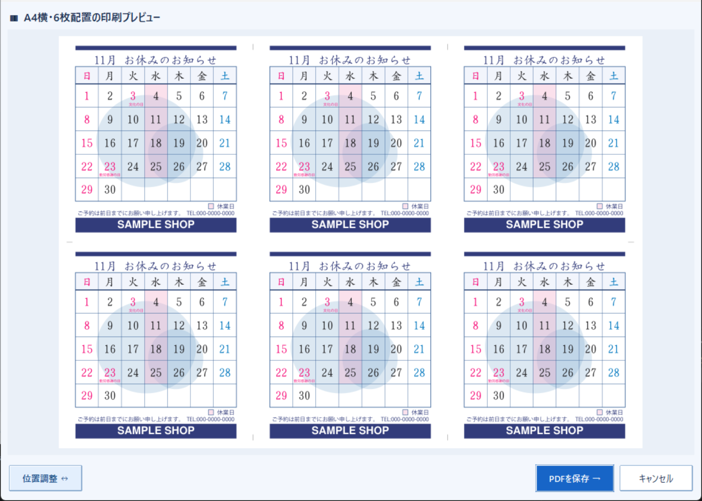
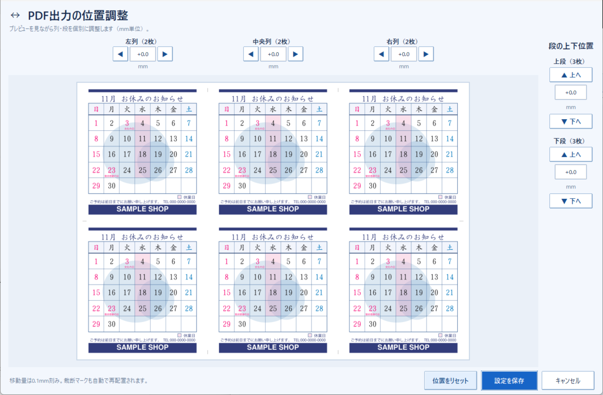
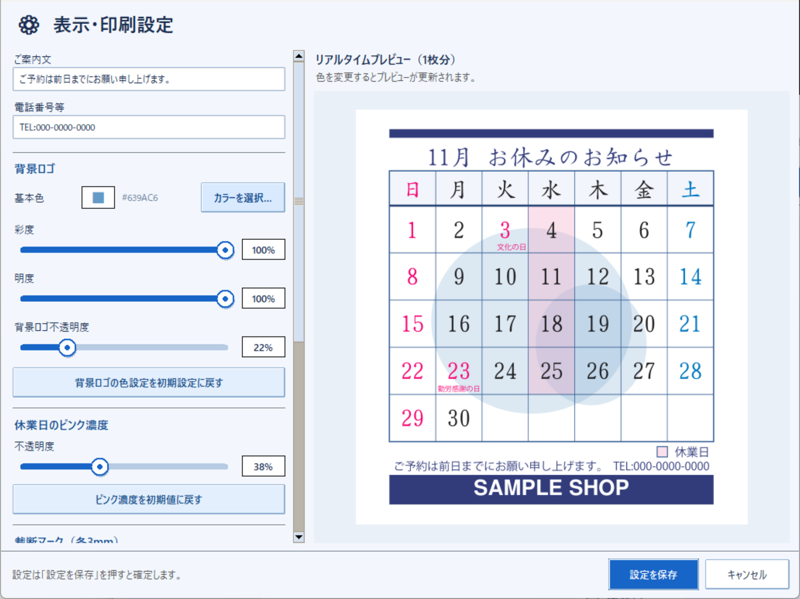

このツールでできること
画面に表示された1か月分のカレンダーをクリックして休業日を決め、A4横向きの用紙に同じものを6枚配置したPDFを作れます。6枚に切り分けて、お客様に配布する用途を想定しています。
※画面内の店舗名・電話番号・ロゴは架空のサンプルです。
祝日名はほかの日付と同じ高さの数字の下へ小さく表示されます。曜日欄は淡い背景色と太い下線で区別します。祝日＝自動的に店休日ではありません。お休みの日は必ずご自身で指定してください。
1. はじめる（初回だけ）
すでにEXE版を受け取った方
- 配布された「デモ版」のフォルダーを開きます。ZIPで届いた場合は「すべて展開」を選んでください。
- ZIPの中から直接実行せず、すべてのファイルを展開したフォルダーを開いてください。
- フォルダー内の「StoreCalendarDemo.exe」をダブルクリックします。「_internal」は移動・削除しないでください。
- カレンダーが表示されたら使用開始できます。PythonやVS Codeのインストールは不要です。
EXEがまだ作成されていない場合：配布物が「ソースコードZIP」であれば、管理者がWindows PCでEXEを生成する必要があります。詳しくは「7. EXEの作成」をご覧ください。

2. 休業日の指定
- 画面上部に表示されている年月を確認します。「◀」と「▶」で月を移動できます。
- カレンダーの休みにする日付をマウスでクリックします。セルが淡いピンク色になります。
- 休業日を取り消す場合は、同じ日付をもう一度クリックします。ピンク色が消えます。
- 変更はその都度自動保存されます。別の月に移動しても、前の月の設定が残ります。
日曜や祝日は自動で休業日にしません。祝日は日付と小さな祝日名を表示しますが、店舗の営業・休業は別に指定できます。
3. PDFを作って印刷する
- 出力したい年月と休業日が正しいか、編集画面で確認します。
- 右上の「PDF出力」をクリックします。
- 開いた画面にA4横向き・3列×2段・同じカレンダー6枚のプレビューが表示されます。位置が合わないときは「位置調整」から、プレビューを見ながら動かせます。
- 内容に問題がなければ「PDFを保存」をクリックし、保存先とファイル名を決めて保存します。
- 「（ファイル名）を出力しました。」と表示されたら完了です。PDFを開いて印刷してください。

印刷するときのおすすめ設定
| 用紙サイズ | A4 |
|---|---|
| 用紙の向き | 横（横向き） |
| 拡大・縮小 | 100%または「実際のサイズ」。プリンターによっては余白で欠ける場合があります。 |
| 裁断位置 | 上下左右の端にある約3mmの短い線。3列×2段の境界位置を示します。 |
| 切り分けたサイズ | 目安：横99mm×縦105mm（印刷倍率100%の場合）。 |
最初は普通紙でテスト印刷をしてください。プリンターによってはページ端に印刷できない部分があるため、裁断マークが見切れる場合があります。
PDFの位置調整（必要な場合のみ）
印刷するときに少し左右・上下へずらしたい場合は、メイン画面の「位置調整」を押してください。PDF出力プレビュー画面からも開けます。別の入力画面へ移動せず、6枚を見ながら同じ画面で調整できます。

- カレンダーを左右へ動かすには、プレビュー上側の「左列」「中央列」「右列」の◀ ▶を押します。各列の上段・下段の2枚が一緒に移動します。
- 上下へ動かすには、プレビュー右側の「上段」「下段」の▲ ▼を押します。各段の3枚が一緒に移動します。
- 数値欄に移動量を直接入力することもできます。単位はmmで、0.1mm単位で調整できます。手入力の場合は Enter キーで反映します。
- プレビューで位置を確認してから「設定を保存」を押してください。次回起動時や翌月のPDFにも反映されます。元に戻したい場合は「位置をリセット」を押し、保存します。
| 左・中央・右の3列 | 左へはマイナス（－）、右へはプラス（＋）。調整範囲は各列±6mmです。 |
|---|---|
| 上段・下段の2段 | 上へはマイナス（－）、下へはプラス（＋）。調整範囲は各段±3mmです。 |
| 裁断マーク | 位置を変えると、隣り合うカレンダーの中心間の中間地点に合わせて短い裁断マークも移動します。 |
| 設定の保存 | 「設定を保存」を押すまで位置は確定しません。「キャンセル」は変更を破棄します。 |
印刷前に必ずテストしてください。 列・段を個別に移動すると切り分け後のサイズが99×105mmから少し変わることがあります。裁断マークの位置を確認し、一般的な余白のあるプリンターでは印刷倍率を100%にしてください。
4. 設定を変える
編集画面右上の「設定」を押すと、色や案内文を変更できます。左側の設定欄はマウスホイールでスクロールできます。 右側は変更が反映された1枚分のプレビューです。

背景のロゴや休業日の色は、設定画面のスライダー（横に動かす棒）で変更できます。まずは少しずつ動かし、右側のプレビューで確かめてください。
背景ロゴの色そのものです。例えば青・緑・赤などを選びます。
例：青色から薄い水色へ変更したいとき色のあざやかさです。下げるほど色味が弱くなり、0％では灰色に近づきます。100％は選んだ基本色のあざやかさです。
例：ロゴの青が鮮やかすぎると感じるときに下げます色の明るさです。下げるほど暗くなり、0％では黒に近づきます。100％は選んだ基本色の明るさです。
例：ロゴを濃い青にしたいときに下げます背景ロゴがどれくらいはっきり見えるかです。0％で見えなくなり、100％では透けません。
例：日付が読みにくいときは数値を下げて薄くします休業日の背景に塗るピンク色の見え方を調整します。数値を下げると薄くなり、背後のロゴが透けやすくなります。
背景ロゴの設定とは別に変更できます調整した色が気に入らない場合に使います。背景ロゴの色設定とピンク濃度にはそれぞれ別の初期化ボタンがあります。
初期化後は「設定を保存」で確定してください迷ったら：基本色はそのままにして、背景ロゴ不透明度または休業日のピンク濃度だけを調整すると、仕上がりを確認しやすくなります。
| ご案内文・電話番号等 | 配布するカレンダーの下に入る文字。誤字や電話番号を確認してください。 |
|---|---|
| 背景ロゴの基本色・彩度・明度 | 背景に表示する図形の色合いを変更します。 |
| 背景ロゴ不透明度 | 薄くしたい場合は数値を小さくします。背景ロゴが見えなくなる場合は0以外に設定してください。 |
| 背景ロゴの色設定を初期設定に戻す | 背景ロゴ関連の数値だけ元に戻します。 |
| 休業日のピンク濃度 | 休業日セルの色の濃さを調整します。背景ロゴの色とは独立しています。休業日の凡例は文字とほぼ同じ高さの小さな枠付き四角で表示します。 |
| ピンク濃度を初期値に戻す | 休業日のピンク色だけ元に戻します。 |
| 裁断マーク | 「表示する（ON）」または「表示しない（OFF）」のどちらかを選びます。×印は使いません。 |
| 編集データの保存先 | 「保存先フォルダーを変更…」から変更できます。空のフォルダーを選ぶと編集データをコピーします。既存データがある場合は確認を求めます。 |
| 書体 | ARP楷書体Mを自動検出します。見つからない場合は代替書体になります。 |
| 祝日データを今すぐ更新 | 内閣府のCSVを手動で取得し直したいときに使用します。 |
- 白い丸がある青い横線：スライダーです。白い丸をマウスで左右へドラッグするか、横線をクリックしてください。右の数値がすぐ変わります。キーボードの左右矢印でも1%ずつ調整できます。
- 枠の付いた水色の四角：「カラーを選択…」「保存先フォルダーを変更…」など、クリックして操作を始めるボタンです。
- 裁断マークの青いボタン：現在選択されている設定です。「表示する（ON）」か「表示しない（OFF）」を押して切り替えてください。
- 濃い青のボタン：「PDF出力」「設定を保存」など、次の操作に進む主なボタンです。
変更を確定するには画面下部の「設定を保存」を押します。「キャンセル」で変更を破棄できます。
5. 月別の保存とバックアップ
休業日は日付をクリックした時点で自動的に保存され、設定画面の変更は「設定を保存」を押した時点で保存されます。
data/closed_days.json | 月別の休業日 |
|---|---|
data/settings.json | 電話番号、案内文、背景色、列・段の位置調整などの設定 |
data/syukujitsu.csv | 取得済みの祝日データ（存在する場合） |
dataフォルダーを削除しないでください。 別のパソコンへ編集内容も引き継ぎたい場合は、アプリを終了させてからdataフォルダーを丸ごとコピーします。
通常、dataはEXEと同じフォルダーに作成されます。書き込み禁止の場所にEXEがあるときは、Windowsのユーザー用保存場所（%LOCALAPPDATA%）へ切り替わります。実際の場所は設定画面の「編集データの保存先」で確認できます。
保存先を変更する方法（v1.12）
- メイン画面の「設定」を開きます。
- 左側の設定項目を下へスクロールして「編集データの保存先」を探します。
- 「保存先フォルダーを変更…」を押し、保存したいフォルダーを選びます。新しい空のフォルダーを選ぶことをおすすめします。
- 設定画面の下部にある「設定を保存」を押します。現在の休業日・設定・祝日データが新しいフォルダーへコピーされ、以後はそこに保存されます。
- 変更後の保存先は設定画面で確認できます。元のフォルダーは削除されません。
既存データのあるフォルダーを選ぶと確認画面が出ます。選択先のデータを使う場合は、「はい」を選びます。この場合、変更中の設定は採用されず、選択先にあった設定が読み込まれます。「いいえ」を選ぶと切り替えません。既存のファイルを勝手に上書きすることはありません。
USBメモリ・ネットワークドライブなど接続が切れる可能性のある場所は、接続が安定していることを確認してください。保存先が利用できないときは標準の保存先で起動し、画面下部に警告を表示します。別のPCへ移す際は、新しいPCで保存先を改めて選択してください。
別のPCで「初期状態」からテストしたいときは、dataのコピーは不要です。休業日や店舗設定を引き継ぎたいときだけコピーしてください。
6. 困ったとき
設定の一番下が見えません
設定画面の左側でマウスホイールを回すか、縦スクロールバーを動かしてください。「設定を保存」は画面の一番下に固定されています。
クリックしても色が変わりません
カレンダーの日付セルをクリックしてください。見出しや曜日部分はクリック対象ではありません。画面のサイズを変えて再表示すると改善する場合があります。
前の月の休業日が消えたように見えます
まず該当する年月か確認してください。別のフォルダーからEXEを実行すると、保存先のdataが異なる場合があります。
祝日が表示されません
ネット接続を確認して設定画面から「祝日データを今すぐ更新」を押してください。2026～2027年は内蔵の祝日データも使用できますが、その後の年は取得済みデータが必要です。
別のPCで字体が変わりました
そのPCに同じフォントがないと、書体が自動的に代替されます。フォントファイルを無断でコピー・再配布せず、利用条件を確認してください。
EXEが起動しません
ZIPをすべて展開したこと、EXEと_internalフォルダーが同じ場所にあることを確認してください。発生したエラーの詳細はdata/last_error.txtに記録される場合があります。未知のファイルに対する警告が出た場合は、提供元を確認してください。
プリントアウトが小さく／切れてしまいます
PDF印刷画面でA4・横向き・倍率100%を確認してください。余白の都合で裁断マークが切れるときは、テスト印刷で調整してください。
7. Windows用EXEを作る（管理者・開発者向け）
ソースZIPには、完成済みEXEではなく、WindowsでEXEを作るためのスクリプトが入っています。EXEを受け取って使うだけの方には、この操作は必要ありません。
- WindowsにPythonを用意し、ソースZIPを解凍してください。既存プロジェクトを更新する場合、
.venvとdataは残します。 - 仮想環境がまだない場合は、作業フォルダーで
py -m venv .venvを実行します。 build_exe.batをダブルクリックします。初回は必要ライブラリをインストールします（ネット接続が必要な場合あり）。- 成功すると
distの中にEXE用フォルダーと、別PCへ渡すZIPができます。 - 配布するZIPには月別休業日・設定を記録した
dataを入れない仕様です。店舗の情報を引き継ぎたいときは、別途安全な方法でデータを渡してください。
python store_calendar.py --check python store_calendar.py --demo --year 2026 --month 11 --output sample.pdf python -m unittest discover -s tests -v
PyInstallerを使いonedir方式で生成します。Windows用EXEはWindows上でビルドする必要があります。
参考：PyInstaller ／ 内閣府・国民の祝日